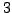

SIGSPEC (abbreviation of `SIGnificance SPECtrum') is a program that computes a significance spectrum for a time series. It evaluates the Probability Density Function (PDF) of a given DFT amplitude level analytically, making use of the theoretical concept introduced by Reegen (2005, 2007). The False-Alarm Probability,
, is the probability that an amplitude in the DFT spectrum exceeds a given limit  , and is obtained through integration of the PDF (e.g. Scargle 1982). Instead of this frequently used quantity, SIGSPEC calculates the spectral significance (abbreviated by `sig') of an amplitude
, and is obtained through integration of the PDF (e.g. Scargle 1982). Instead of this frequently used quantity, SIGSPEC calculates the spectral significance (abbreviated by `sig') of an amplitude  by
by
| (1) |
E.g., a sig equal to  indicates that the considered amplitude level is due to noise in one out of cases. This value is used as the default threshold for the termination of the prewhitening sequence.
indicates that the considered amplitude level is due to noise in one out of cases. This value is used as the default threshold for the termination of the prewhitening sequence.
SIGSPEC performs an iterative process consisting of four steps :
:
If SIGSPEC is called without any special settings, it produces four files:
SIGSPEC can produce additional files containing
Given a sequence of prewhitenings yielding  significant components with associated sigs
, it is desirable to additionally know the probability of the entire sequence to be valid. This means that not a single erroneous component is allowed. The False-Alarm Probability
of an individual peak is the probability that it is generated by noise. The complementary probability that the considered peak is true is
. If the individual components are statistically independent, the cumulative probability of all components to be real is the product of the individual probabilities,
significant components with associated sigs
, it is desirable to additionally know the probability of the entire sequence to be valid. This means that not a single erroneous component is allowed. The False-Alarm Probability
of an individual peak is the probability that it is generated by noise. The complementary probability that the considered peak is true is
. If the individual components are statistically independent, the cumulative probability of all components to be real is the product of the individual probabilities,
| (2) |
| (3) |
In consistency with the definition of the sig associated with an amplitude in the DFT spectrum, a cumulative sig of  means that the prewhitening cascade is entirely true in  out of cases. Or - in other words - in one out of cases, at least one of the identified components is generated by noise.
out of cases. Or - in other words - in one out of cases, at least one of the identified components is generated by noise.
Whereas the individual sig of a component in the prewhitening sequence may exceed that of the previously identified maximum, the cumulative sig is a monotone sequence uniquely decreasing with each additional signal component.
The prewhitening loop stops, if no sig level above a pre-defined limit is found. As described in ``Program termination'', p. , there are three different criteria that may be applied to determine the conditions for program termination:
, there are three different criteria that may be applied to determine the conditions for program termination:
The program also supports the subdivision of a time series into a set of intervals and the separate analysis of all these parts in order to monitor frequency changes of signal components with time. This method will be called time-resolved analysis. In this case, the output is somewhat richer, as described in ``Time-resolved Analysis'' (p. ).
).
An immanent problem in the analysis of non-equidistantly sampled time series is aliasing. Due to periodic gaps in the data set, a peak in the amplitude spectrum is accompanied by side peaks. Especially if more than one sinusoidal component is present in the data, the superposition of side peaks may produce a maximum amplitude in the DFT spectrum at a frequency that has nothing in common with the true signal frequencies. Such a misidentification usually damages the complete prewhitening sequence from this point on. As pointed out by Reegen (2007), SIGSPEC appears less prone to aliasing than the previously used methods, since the noise component is employed into the statistical treatment correctly. However, the superposition mentioned above may also lead to erroneous identifications.
In order to overcome this potential weakness, SIGSPEC supports the simultaneous calculation of more than one signal component simultaneously. Instead of picking only the peak associated to maximum sig, a whole set of highest peaks is examined, searching all possible combinations for several iterations in order to obtain the solution providing a minimum rms residual. This function is called AntiAlC (ANTI-ALiasing Correction) mode (p. ).
).
There is a second option to examine multiple peaks simultaneously: a non-sinusoidal periodicity is represented by multiple peaks in the DFT amplitude spectrum. One finds a fundamental frequency, plus one or more harmonics the frequencies of which are integer multiples of the fundamental. In astronomical applications, this may occur if shock waves are present in the stellar pulsation or if surface variations are examined. In such a case, it is desirable to take into account not only the fundamental frequency, but also all available harmonics at once. This analysis of harmonics is described on p. ).
).
SIGSPEC is capable of analysing multiple time series input files simultaneously. This MultiFile mode (p. ) speeds up the computation considerably for time series with the same sampling.
) speeds up the computation considerably for time series with the same sampling.
A further option is the evaluation of differential significance spectra (p. ). The user may specify target vs. comparison data among the input files. Then SIGSPEC performs a quantitative comparison of the two groups of time series and returns a measure of the probability that a peak in a target dataset is `true', taking into account amplitudes and phases at the corresponding frequency in the comparison spectra. In this context, the term `true' is used in the sense of `not entirely produced by the same variability as present in the comparison data'.
). The user may specify target vs. comparison data among the input files. Then SIGSPEC performs a quantitative comparison of the two groups of time series and returns a measure of the probability that a peak in a target dataset is `true', taking into account amplitudes and phases at the corresponding frequency in the comparison spectra. In this context, the term `true' is used in the sense of `not entirely produced by the same variability as present in the comparison data'.
The examples presented here refer to the sample projects available for download at http://www.astro.univie.ac.at/SigSpec.